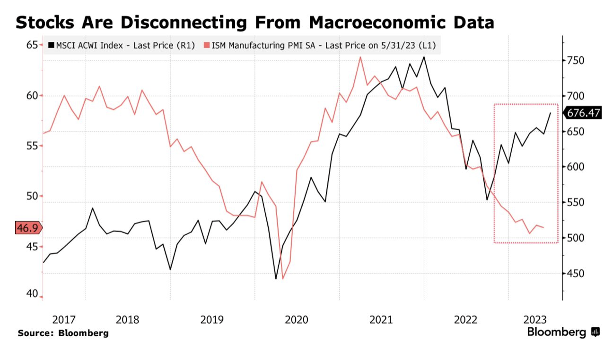

Fred's News Channel
每日新闻
投资观点
常用工具
7月3日早间新闻
根据彭博社及路透社新闻编辑整合
全球股市2023年上涨了13%，股市的上涨已经完全与经济大概率衰退的背景脱节。几位著名的投资经理都发出警告，继续跟进上涨的趋势有极大的风险。
详情链接

潘功胜接棒郭树清担任中国人民银行党委书记，潘的履历显示及其丰富的金融知识与背景。被认为是中央对于维稳人民币汇率及刺激市场经济的新举措。过去12个月人民币汇率下降了8%。但是央行的主要政策包括缓慢降息以及鼓励银行借贷的道路基本不会改变。
特斯拉第二季度售出46.6万辆汽车，超出预期，其减价措施效果显著。但在中国，电子车的全球第二大市场，特斯拉份额不升反降，马斯克上周宣布在中国Model S跟X再降价4.5%。
详情链接
个人观点：
主流分析师最近估计都在掉头发。怎么看都该往下走的股市就是不往下走。最近最新的问题是，咱们用了50多年的指标还好用么？
但其实回顾之前2020年，2021年，我觉得指标的作用还是有的，所有指标都认为股市该往下走的时候，其实就是时机未到。
比如2020年11月，当时指标认为美国股票过高，11月没跌，12月没跌，2021年1月还大涨了一波，但是2月俄乌冲突一发生，股市直接下去30%。
所以这波大概率也是这样，需要一个刺激，不然可能继续虚高。。
查看其他日期的新闻
Fred Rong
MAS Registered
RF-300558704
投资咨询,欢迎预约！
立即预约